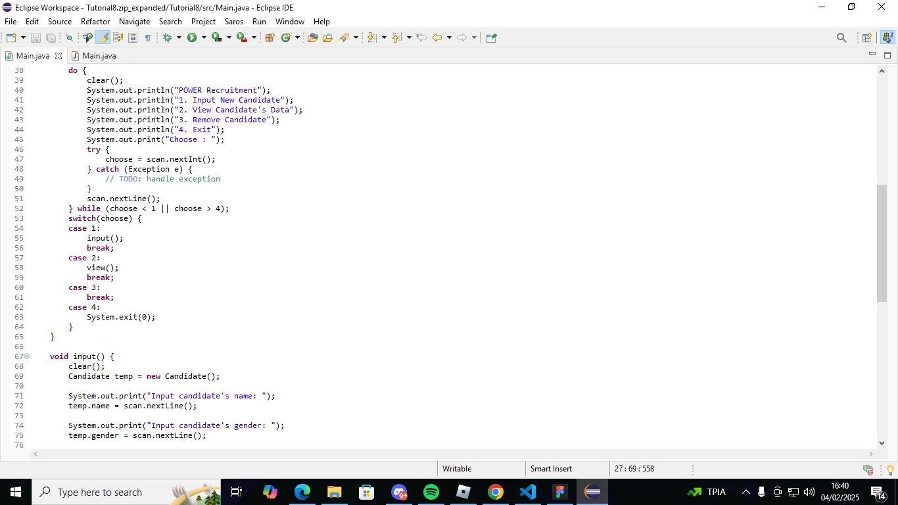
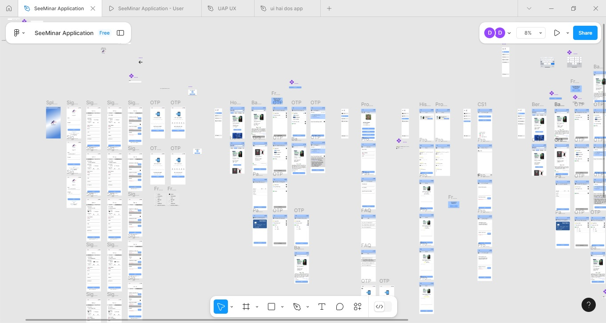
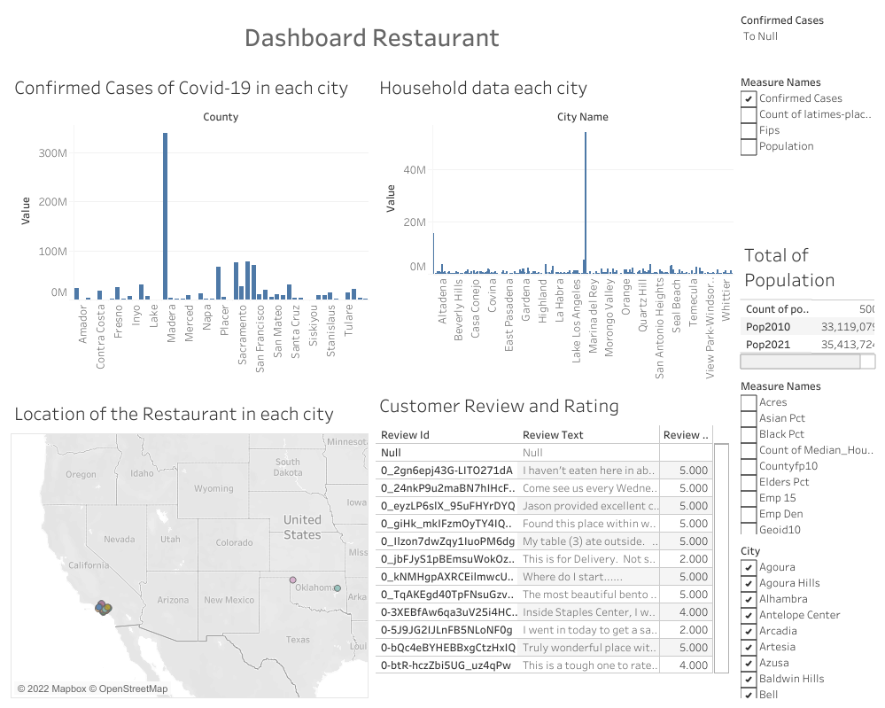
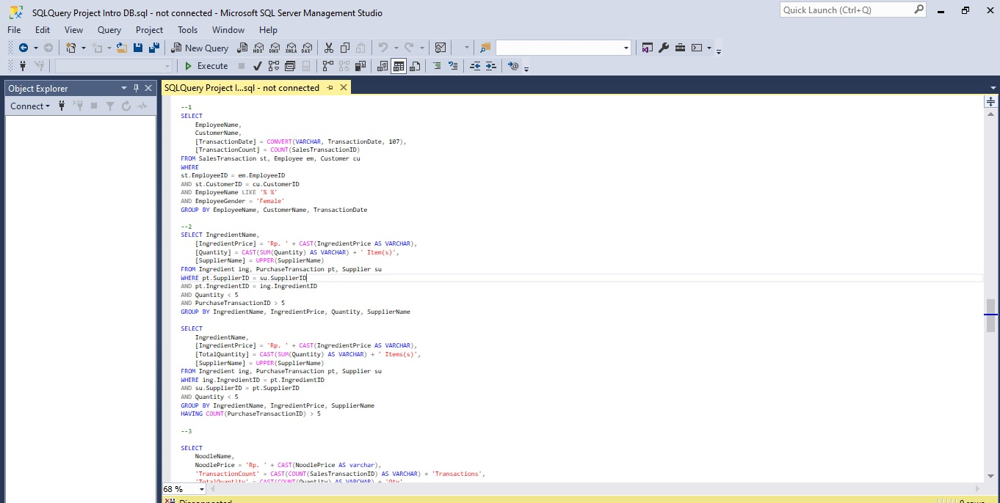
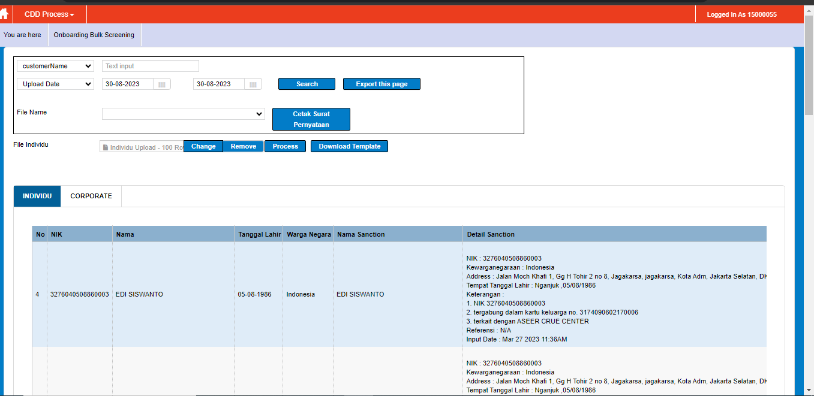

My Portofolio
Here are the some attachment of my projects
Java Project
Simple Program for Transaction
Im using ECLIPSE IDE to create these simple Java program, by using Do While i create the Main Menu of the program, The menu consist Input data, View Data, and Remove. Using switch case to seperate each sub-menu that customer's going to choose and using vector to collect or keep the data that customer input. These program will then be able to show all the customer's data and can remove them from the list.
View ProjectUI UX Project
Mobile Application Design with Figma
In this project, im creating a design for mobile application. The application is called Seeminar and is used for finding and join seeminar online, smiliar to online shopping, but in this case the apps is to find seminar or webinar. The tools i used to create this application design is Figma, a cloud-based design tool to create and test apps and websites. Looking at the problem existed in around the students, this idea appeared.
View ProjectTableau Project
Dashboard. Data: Sales & review restaurant at California during Covid
This is a data set that records sales & review from customer in each restaurant at California during Covid-19. This data includes various factors such as median household income, confirmed case covid, population density, restaurant dataset, and review dataset. This dataset provides important information about how much confirmed case of Covid-19 each sector and how that affecting the restaurant sales & review. By looking at this data, it is possible to analyze the patterns of sales that may occur due to these various factors. This information can be useful for customers, sales management, and other concerned parties to identify the most common causes of sales and take the necessary actions to increase the income or sales during these various factors.
View ProjectSQL Project
Ingredients Sales Database
Making databases to record information about ingredients sales. Table in these database consist various factor such as ingredients information, customer information, supplier information, employee information, and purchase transaction information. Each information consist table such as ingredients name, ingredients price, ingredients stock, employee id, employee name, customer id, customer name, supplier id, supplier name, purchase transaction id, date, etc. In these each table im as well making query based on case needed to show the data that need to be analyzed
View ProjectAnalysis and Design Project
Pitch Deck

This pitch deck is used create to present and estimate the income and profits and solutions obtained or provided by the products or services offered. Functions as an initial proposal for a business that will be created. Contains the products or services offered, cost of good sales and profits and sales expenses. Also displays solutions that can solve problems in society and future strategies to keep products or services in society.
View ProjectIntern Project
Testing Anti Money-Laundering Based System Website
During my intern period as an application tester, one of my project is to testing a anti money-laundering based development website. My responsbility in this project include performing test on bulking screening, data output, data scanning, and notification on Anti Money-Laundry based development website. Uploading a bulk of data from excel to the website and checking if there are any missed data that didnt uploaded correctly according to test plan. The uploaded data then checked again, to make sure the output is the same as in the excel and the data will then be scanned. The website should pop up a notification in case one of the data from the customer is suspicious or in a black list data, and the notification will also be checked to show properly the same as the written scenario in test plan. All the steps were documented and recorded to see how long the time needed for each step took.
View Project